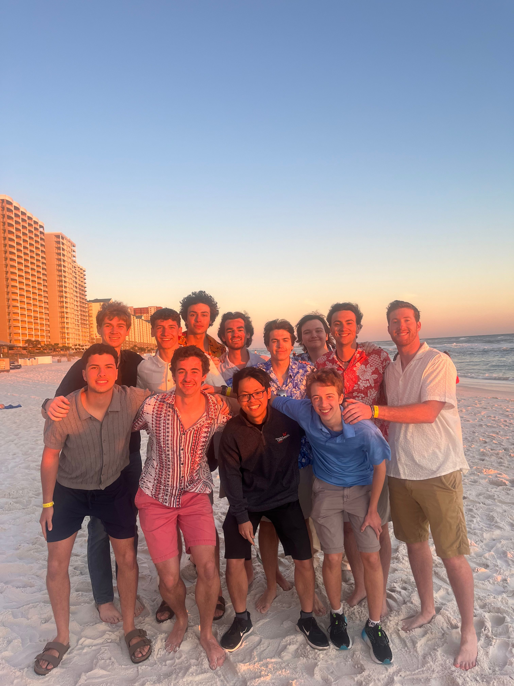
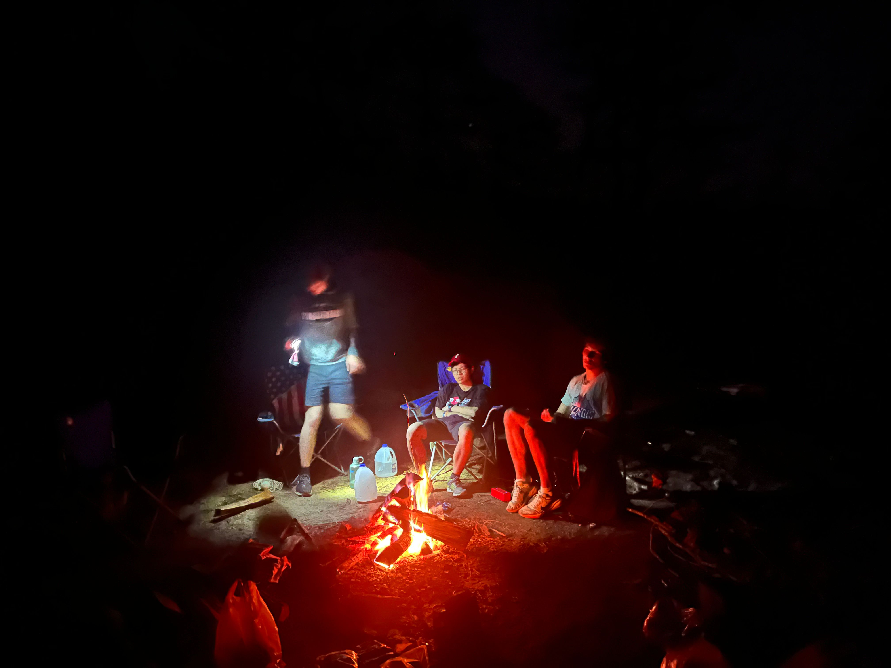
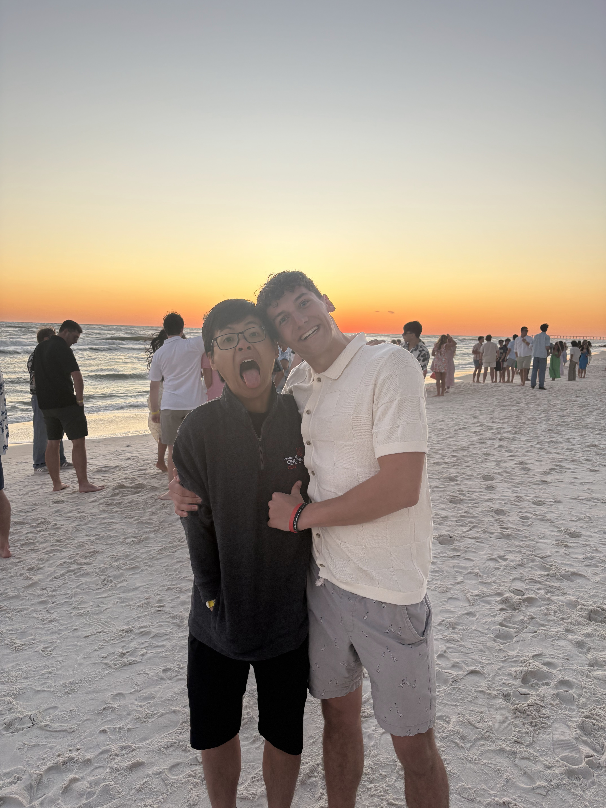

2024-2025
The Disability Studies honor seminar I took last Spring has a great and the most impact on me personally. It gave me a brand new perspective about people with disability and disability in general. I used to regard people with disability in their own group because of all my bias and influence from the modern society. However, this seminar shows me that disability is just a social construct that dominant group creates to suppress people in other groups. This situation has happened since the beginning of modern society and has influenced everyone and place the bias inside everyone. People with disability has some unique characteristic medically, but socially, it is their own identity that makes them special. This point of view blew my mind; although bias still clings on to me, I have a different perspective for people with disability. They are just people with unique traits like those who have red hair, green eyes, etc. I don’t know how to express my gratitude toward Professor Kathleen Hulgin passion and efforts regarding this seminar, but it changes me a lot at levels that I’m not sure I could explain. It’s not just the love and equality toward people with disability, but also the desire to travel the world and experience different culture. They don’t seem to be related but some parts of me got influenced in a way that I could not explain.
I think future research experience overseas next year would be really benefit and continues the impact I got from the honors seminar I did last year. I’m thinking of doing a research experience in Europe next summer. I think there are some programs that the university offers in partnership with some universities in Spain and France in Europe that would be really fun. There are also some programs offered by other university in Switzerland that would be interesting. My plan is to prepare the applications and apply as soon as they are open. Spending a summer doing research in Europe would not just help me with my professional goal and career plan, but also gives me an opportunities to experience different cultures and travel to different countries. That would be really great! I don’t know if this will turn out to be something, but it’s a goal to move forward and get motivated and excited everyday. It also helps me move closer to my definition of a Global Citizen Scholar: an explorer.


